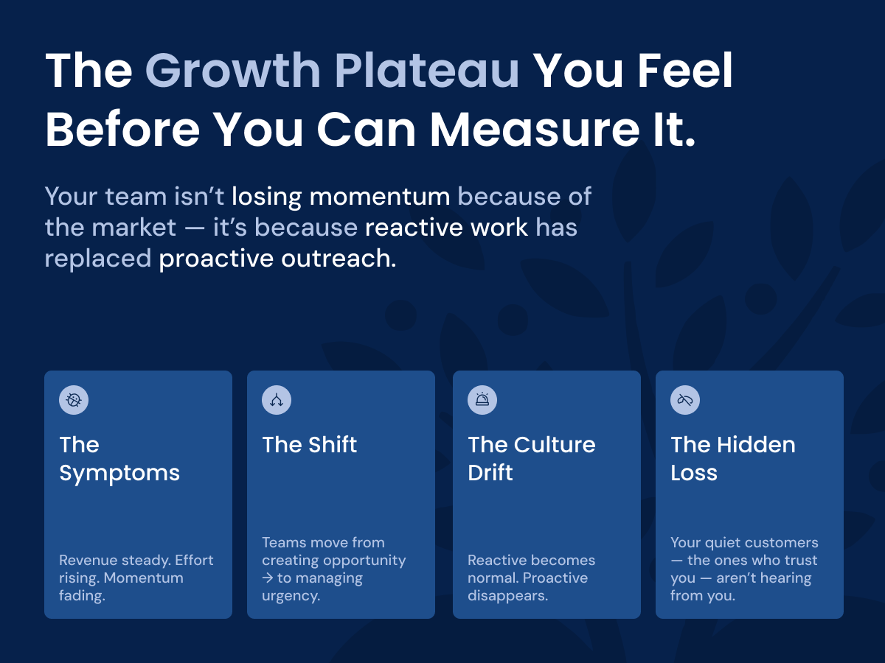
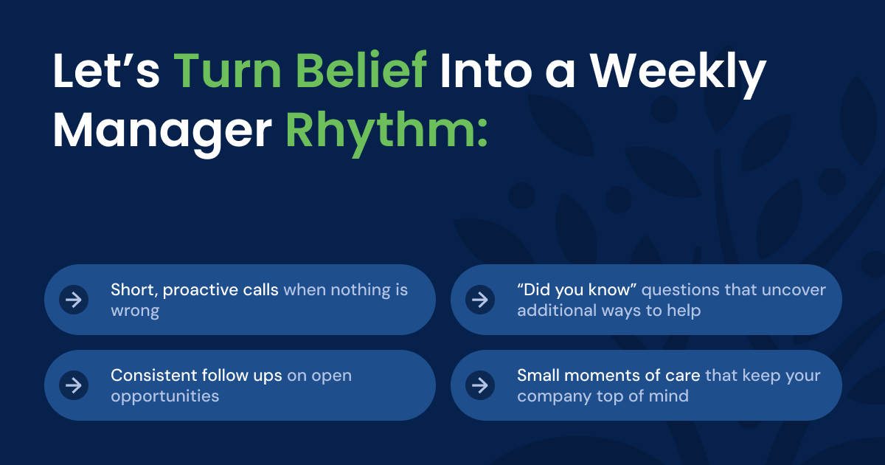
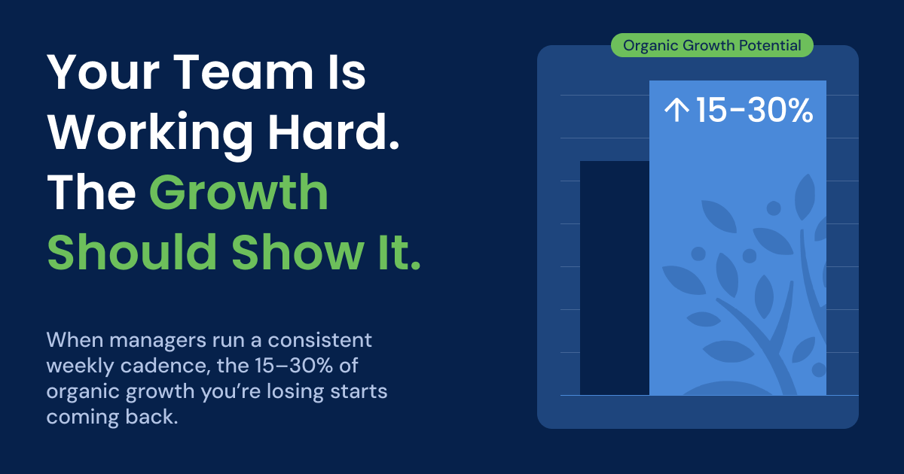

From CEO to Chief Belief Officer: How a Leader’s Belief Powers the System
When CEOs step back, belief fades. Learn how shifting from CEO to Chief Belief Officer keeps culture, managers, and growth systems energized.
ReadRun Outgrow · CEO series, part 1

This article is part one of our CEO Series where we explore how managers turn proactive belief into a simple weekly rhythm that drives consistent, measurable growth.
You know the feeling.
Revenue is steady. Your people are busy. Every team is in motion. Yet the company feels like it is working twice as hard for the same result. Meetings feel heavier. Energy is flatter. Sales are holding, but they are not climbing the way they used to.
This is the growth plateau that often sneaks up on successful mid-market companies. It usually is not a market problem or a product problem. It is a connection problem inside your culture.
As you grow, the business quietly shifts from creating opportunity to managing urgency. Sales responds to issues. Operations fixes what is broken. Service teams live in ticket queues. Everyone is working hard, but very few people are reaching out when nothing is wrong.
Over time, that reactive rhythm becomes the culture. People brace for the next problem instead of looking for the next possibility. Confidence erodes, fear of rejection grows, and the proactive mindset that built the company starts to evaporate.
Here is the painful part. The growth you are losing does not require new products or new markets. It is sitting inside your existing accounts, with customers who already trust you but have not heard from you in too long. That’s often when a revenue plateau begins — long before it shows up in the numbers.
Outgrow exists to recapture that growth. And your managers are the key to whether it works or fades.

Growth rarely slows because people get lazy. It slows because your belief at the top loses momentum on the way to the front line.
You can be completely clear in your own mind about proactive, relationship-driven growth. You can explain it in town halls, strategy decks, and leadership meetings. Yet by the time that belief reaches the counter, the branch, or the service desk, it often shows up as routine.
The work looks the same. The conversations sound familiar. But the energy is different.
That is the leadership gap. It is the silent space between what you intend as the owner and what your people do every day with customers.
In that space sit your managers.
They are the hinge between strategy and execution. They are buried in hiring, scheduling, problem solving, and customer issues. Without a simple framework to carry your belief into weekly behavior, each location and team starts to improvise its own culture.
One region becomes upbeat and proactive. Another becomes cautious and defensive. A third is somewhere in the middle. Customers feel those differences. Not because your people do not care, but because the company’s voice is not consistent.
This fragmentation is often what pushes a company closer to a revenue plateau.
The risk to you is simple. When belief does not travel, behavior fragments. Growth stops being a system and becomes dependent on personalities.
The result? It can keep your company in a revenue plateau.
Every company talks about culture. Very few are honest about where it actually lives.
It does not live in a slogan on the wall. It does not live in the latest initiative or dashboard. It does not even live in your own conviction, unless that conviction shows up as daily action on the front line.
Culture lives in the middle.
Managers are the connective tissue between leadership intent and team behavior. Through their tone, their consistency, and the conversations they choose to repeat, they decide whether your belief stays alive or fades into background noise.
Growth does not happen in the boardroom. It happens in small conversations.
A quick call to a long-time customer just to see how else we can help.
A service rep who follows up after an install to ask what else is needed.
A sales meeting that starts with wins and proactive outreach instead of only open fires.
Who controls the quality and frequency of those conversations? The manager.
That is why we say: the team goes as the manager goes. If the manager is engaged and proactive, the team leans into customers. If the manager is tired and reactive, the team slides back into survival mode.
Most mid-market CEOs underestimate how much leverage sits in that role. Not because they do not respect their managers, but because those managers are rewarded for fixing things, not for building momentum.
Outgrow changes that. It turns managers into culture carriers with a practical framework instead of another motivational speech.
Belief does not scale on its own. It needs a rhythm.
Outgrow is a proactive relationship system built for B2B companies that want to avoid the revenue plateau and instead see predictable organic growth. On the surface, it looks simple. A few specific behaviors repeated every week:
None of these actions take long. The power is in the cadence.
Outgrow gives each manager four things:
No complex theory to interpret. Just clear actions that anyone on the team can take with existing customers.
Managers run a fifteen to twenty minute Outgrow huddle every week. They talk about who the team has helped, who they will reach out to next, and what opportunities are emerging. The focus is on proactive outreach, not firefighting.
Instead of staring at lagging numbers, managers see actions. Calls made, follow ups logged, quotes sent, opportunities opened. They can coach momentum long before the month end report.
Wins and efforts are shared weekly. People hear their names attached to helpful behavior. Confidence rises. Even hesitant team members start to reach out more.
When managers run this rhythm, accountability stops feeling like pressure and starts feeling like progress. The team is not being judged on outcomes they cannot fully control. They are being encouraged around actions that are in their hands every day.
That is how belief becomes behavior. Not once at a kickoff, but every week in every location.

There is one part of this you cannot hand off. You can delegate the process. You cannot delegate the priority.
Your managers can run the Outgrow rhythm. They can lead the huddles, track the actions, and celebrate the wins. But only you can signal that this work still matters.
When the CEO’s voice goes quiet about proactive growth, the organization gets the message. Managers assume they need to refocus on whatever feels most urgent. Within a few weeks, the cadence softens. Huddles get shorter or disappear. Proactive outreach becomes optional again. And your company quietly drifts back toward a revenue plateau.
You do not need to run Outgrow. You do need to energize it.
That can be as simple as:
Those small moments tell everyone, from managers to front line, that this is not a flavor-of-the-month program. It is how your company grows.
When you supply belief and your managers supply rhythm, you stop pushing growth from the top. You start pulling it through the middle. Culture becomes consistent. Customers feel cared for before there is a problem. And the 15 to 30 percent of organic growth that used to leak out of your system starts to stay in. That is the hidden engine of Outgrow. Not the idea, but the managers who run it every week, with your belief behind them.
Keep reading
When CEOs step back, belief fades. Learn how shifting from CEO to Chief Belief Officer keeps culture, managers, and growth systems energized.
ReadWhy accountability fails when it shows up too late — and how manager accountability, rhythm, and weekly conversation create predictable performance.
ReadLearn how managers operationalize belief through a simple weekly rhythm that turns proactive intent into consistent, measurable growth.
Read